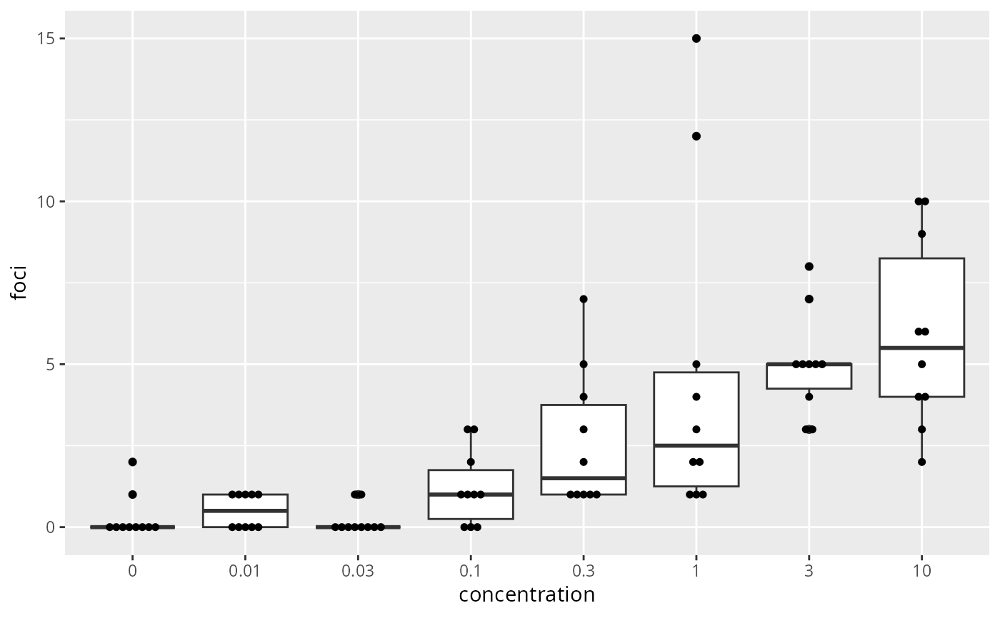
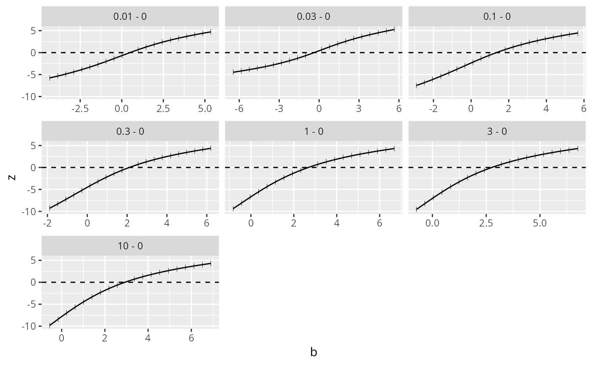

Higher order asymptotics using the modified likelihood root
hoa.RdTransforms a signed root deviance profile to a modified likelihood root profile.
Examples
#######################################
## cell transformation assay example ##
#######################################
str(cta)
#> 'data.frame': 80 obs. of 2 variables:
#> $ conc: num 0 0 0 0 0 0 0 0 0 0 ...
#> $ foci: int 0 1 0 0 0 0 0 0 0 2 ...
## change class of cta$conc into factor
cta$concf <- factor(cta$conc, levels=unique(cta$conc))
library(ggplot2)
ggplot(cta, aes(y=foci, x=concf)) +
geom_boxplot() +
geom_dotplot(binaxis = "y", stackdir = "center", binwidth = 0.2) +
xlab("concentration")

# glm fit assuming a Poisson distribution for foci counts
# parameter estimation on the log link
# removing the intercept
fm <- glm(foci ~ concf-1, data=cta, family=poisson(link="log"))
### Comparing each dose to the control by Dunnett-type comparisons
# Constructing contrast matrix, the same as
# multcomp::contrMat(table(cta$concf), type = "Dunnett")
lev <- levels(cta$concf)
CM <- cbind(-1, diag(length(lev) - 1))
dimnames(CM) <- list(paste(lev[-1], "-", lev[1]), lev)
# calculating signed root deviance profiles
(dmcp <- mcprofile(fm, CM))
#>
#> Multiple Contrast Profiles
#>
#> Estimate Std.err
#> 0.01 - 0 0.511 0.730
#> 0.03 - 0 -0.405 0.913
#> 0.1 - 0 1.386 0.645
#> 0.3 - 0 2.159 0.610
#> 1 - 0 2.730 0.596
#> 3 - 0 2.813 0.594
#> 10 - 0 2.979 0.592
#>
# computing profiles for the modified likelihood root
hp <- hoa(dmcp)
plot(hp)

# comparing confidence intervals
confint(hp)
#>
#> mcprofile - Confidence Intervals
#>
#> level: 0.95
#> adjustment: single-step
#>
#> Estimate lower upper
#> 0.01 - 0 0.511 -1.2527 2.50
#> 0.03 - 0 -0.405 -2.9567 1.86
#> 0.1 - 0 1.386 -0.0423 3.23
#> 0.3 - 0 2.159 0.8661 3.94
#> 1 - 0 2.730 1.4882 4.49
#> 3 - 0 2.813 1.5769 4.57
#> 10 - 0 2.979 1.7519 4.73
#>
confint(dmcp)
#>
#> mcprofile - Confidence Intervals
#>
#> level: 0.95
#> adjustment: single-step
#>
#> Estimate lower upper
#> 0.01 - 0 0.511 -1.2490 2.55
#> 0.03 - 0 -0.405 -3.0518 1.87
#> 0.1 - 0 1.386 -0.0173 3.31
#> 0.3 - 0 2.159 0.8961 4.04
#> 1 - 0 2.730 1.5194 4.59
#> 3 - 0 2.813 1.6083 4.67
#> 10 - 0 2.979 1.7835 4.83
#>